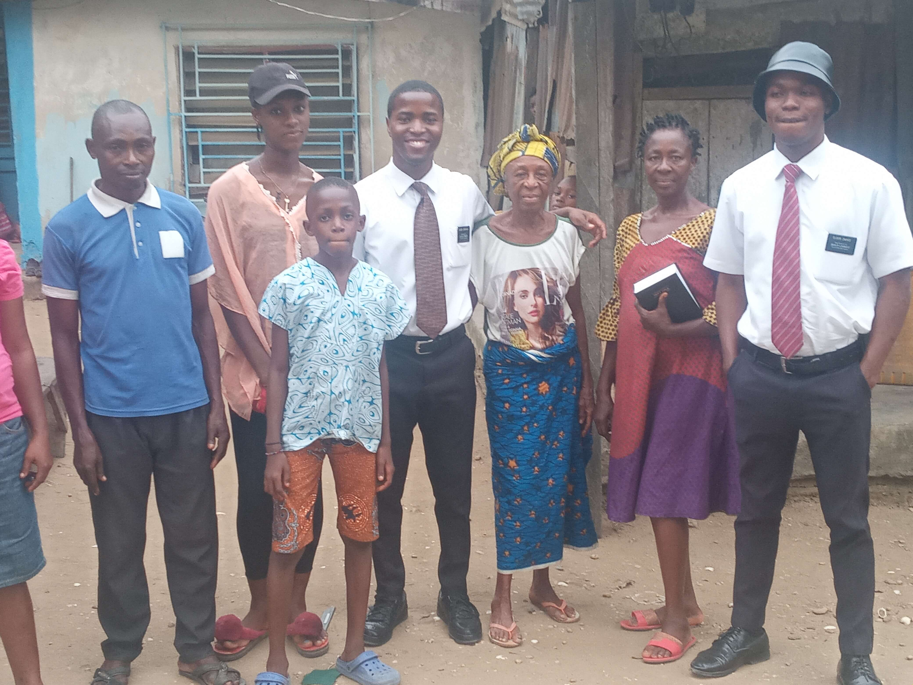
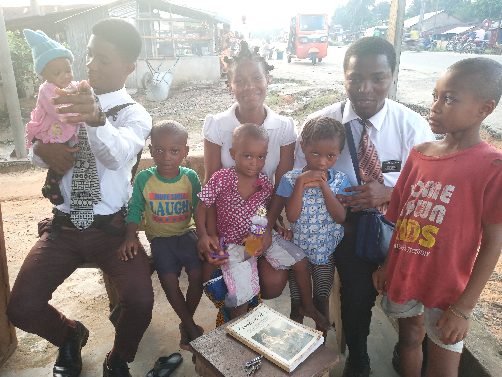
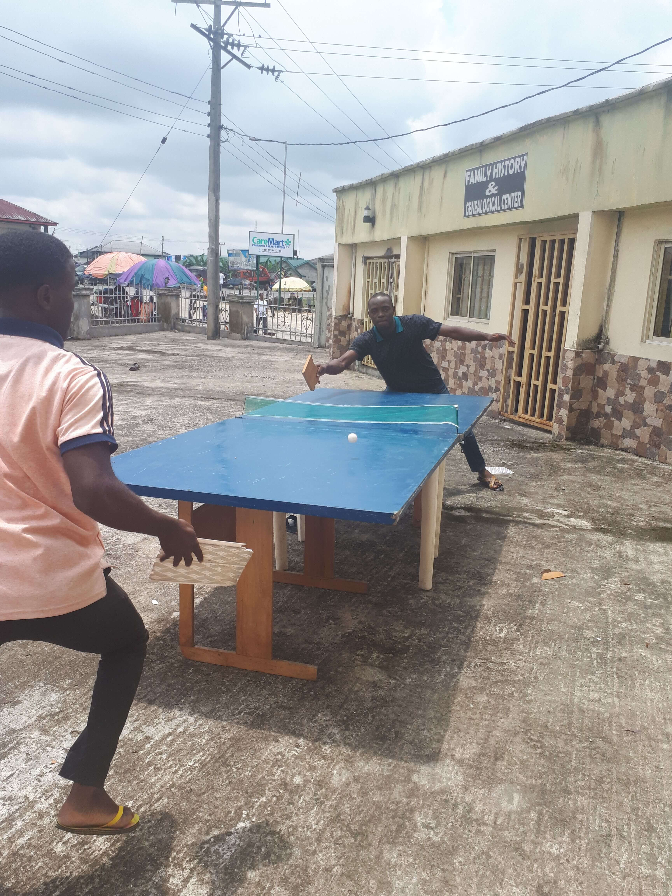

Background
Jeremiah Ezekiel Happy also know as Dr zik, was born in Warri Local Government Area of Delta Sate Nigeria, to the family of Sir Jeremiah Togbaturi and Mrs Janet Okitikpi. He grew up in Torugbene town in Bomadi, where he strated his early learning days.
After The death of Mr Jeremiah Togbaturi, the family moved to Orhuwhorun Town in Udu LGA in Delta State.
Education
Ezekiel attended Community Primary school III in Orhuwhorun Town, afterward; The family relocated to Yenegoa, Bayelsa State where he attended Community Secondry School Biogbolo. He studied Medical Laboratory Science in the prestigious Niger Delta University
Due to his avid nature in the Technological world, He further enrolled in BYU-Pathway. He is currently a BYU-Idaho student studying Applied Technology
Work and Experience
Ezekiel has experience in HTML, CSS, PYTHON, JQUERY and other computer languages as he worked on projects that solved real world problems.
As a freeCodeCamp learner, He completed his first Responsive Web Design Certificates by building different web design projects like product landing page, biography page, penquins, a survey form, a tribute Page, a technical documentation Page, a Product Landing Page and a Personal Portfolio Webpage
These hands on experoence made him learn various web designing principles and practices
Service
Ezekiel is also known for is ability to serve and to make everyone around him feel comfortable. He has been described as man for all by all those who has worked along side him
Ezekiel served a Full-time Mission For the Church of Jesus Christ of Latter-day Saints. Missionary work is completely voluntary and requires commitment, diligent and hardwork to succeed
During the service, Zik learnt resilience, persisverance in accomplishing goals


Hobbies

When not coding, zik loves playing table tennis, swimming and listening to music. These activities also contribute to his strength and agility that keeps him going in his career and service to all
Conclusion
Ezekiel is a lifelong learner and seek to improve in whatever he does. Feel free to contact him directly if you have any questions, suggestion and feedback Contact Us